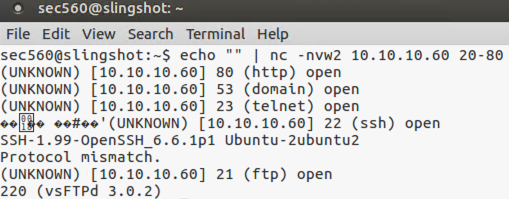
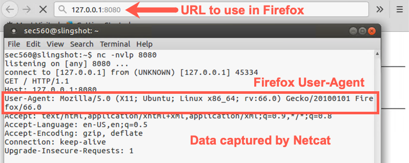
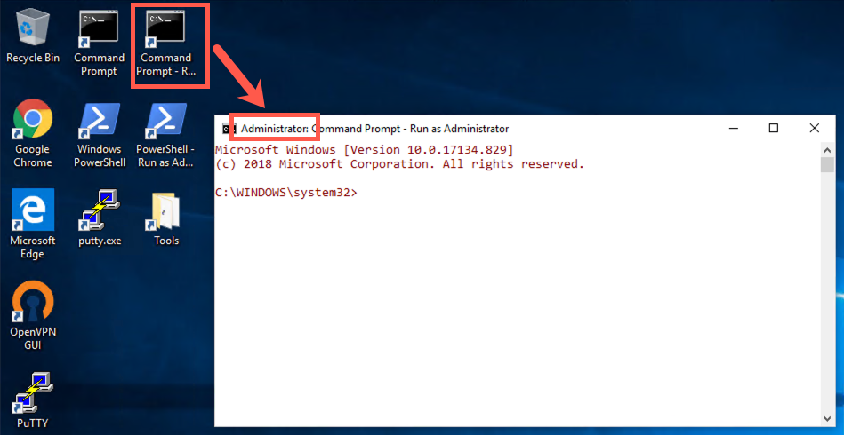

Lab 2.5: Netcat
Objectives
- To use Netcat to redirect Standard Input and Standard Output across the network for a simple chat
- To use Netcat as a client to gather connection strings from servers
- To use Netcat as a listener to gather connections strings from clients
- To port scan with Netcat
- To move a binary file with Netcat
Table of Contents
Lab Setup
From your Slingshot Linux image, ensure that you can ping 10.10.10.10 in the 560 target environment:
$ ping 10.10.10.10
Additionally, for this lab, you’ll need to have your Windows machine networked in the 560 environment. Please ensure that Windows can ping 10.10.10.10:
C:\> ping 10.10.10.10
In our analysis, we’ll look at moving information between a Netcat listener on Linux and a Netcat client on Windows.
On Linux, netcat (nc) is already in your path. On Windows, the file is located at C:\Tools, but it is not in your path.
BE AWARE OF YOUR PROMPTS!
- Linux: We will use shorthand of
$instead of the fullsec560@slingshot:~$to save space. - Window: The prompts will begin with
C:\>. Again, to save space, we won't show the full path.
IP Addresses
Now will be a good time to note your Windows and Linux IP addresses. They are shown in the UI, but to make sure, you can use the following commands to get your addresses
- Linux:
ifconfig eth0, or if connected via VPN, runifconfigand look for an interface namedtapXwhere X is a number, likely zero. - Window:
ipconfig. Look for your Ethernet0 interface unless you are connected via VPN, then look for your tap interface.
Lab – Step-by-Step Instructions
1. Usage
We’ll start this lab by experimenting with a plain Netcat client communicating with a plain Netcat listener so we can get a feel for how they are moving Standard Input and Standard Output across the network.
The example below will work on both Windows and Linux. It will start a listener using -l (lowercase L, not a one), -n, and -p. The options do the following:
-nDon't perform a name lookup-vVerbose, show when a connection is established-lListen (lowercase L, not a one)-pThe port to listen on
nc -n -v -l -p 5555
Note: The options above can be smashed together as long as
-pis next to the port number. For example,nc -nvlp 5555is equivalent tonc -n -v -l -p 5555
This listener will simply wait for a connection to arrive on local TCP port 5555. When it comes in, it will display the data on Standard Output.
On your Windows machine, open a command prompt and initiate a connection from Windows to Linux with Netcat, as follows:
C:\> c:\tools\nc.exe -v YOUR_LINUX_IP_ADDRESS 5555
Note: Do not type
YOUR_LINUX_IP_ADDRESSbut your Linux IP address. You can get the IP address usingifconfigon Linux. It should be similar to 10.10.75.123.
When the connection is made, start typing information into either the client or the listener. When you press Enter, the data will be sent to the other side. Type into each side, and make sure data is flushed back to the other side. Drop the connection with a CTRL-C.
Step 2:
Now that we have seen how data is exchanged using Netcat clients and listeners with Standard Input and Standard Output, let’s try some manual service connection string gathering.
From your Linux machine, we’ll pull information from various locations.
Start by running an SMTP server (called exim4) on your localhost:
$ sudo service exim4 start
We want to run a Netcat client verbosely (-v), without resolving names (-n), to connect to our localhost (127.0.0.1) using TCP port 25. Try that, using an IP address of 127.0.0.1. Also, try it with a target machine name of localhost. Why doesn’t the latter work? (Hint: the -n means "don’t resolve names", and we gave it a hostname of localhost.)
$ nc -v -n 127.0.0.1 25 $ nc -v -n localhost 25
Press CTRL-C to drop any connections you make. Now, try pulling connection strings from the following targets, comparing the results and trying to determine the service, its version, and anything the target tells us about the operating system, by typing:
To save keystrokes, we can type
-nvinstead of-n -v.
$ nc -nv 127.0.0.1 25 $ nc -nv 10.10.10.10 25 $ nc -nv 127.0.0.1 22
The output of the command should look like that below. Note: the ^C is the CTRL-C used to break the connection.
$ nc -nv 127.0.0.1 25 (UNKNOWN) [127.0.0.1] 25 (smtp) open 220 slingshot ESMTP Exim 4.86_2 Ubuntu Sun, 30 Jun 2019 19:50:50 +0000 ^C $ nc -nv 10.10.10.10 25 (UNKNOWN) [10.10.10.10] 25 (smtp) open 220 trinity.sec560.local Microsoft ESMTP MAIL Service, Version: 8.5.9600.16384 ready at Sun, 30 Jun 2019 15:50:57 -0400 ^C $ nc -nv 127.0.0.1 22 (UNKNOWN) [127.0.0.1] 22 (ssh) open SSH-2.0-OpenSSH_7.2 ^C
Now try the following (again using the shorthand of -nv instead of -n -v):
$ nc -nv 10.10.10.60 22 $ nc -nv 10.10.10.60 80
For that last one, type in the appropriate HTTP connection string followed by Enter --> Enter (yes, twice!) to elicit a response:
HEAD / HTTP/1.0
Your results should look something like this:
$ nc -nv 10.10.10.60 22 (UNKNOWN) [10.10.10.60] 22 (ssh) open SSH-1.99-OpenSSH_6.6.1p1 Ubuntu-2ubuntu2 ^C $ nc -nv 10.10.10.60 80 (UNKNOWN) [10.10.10.60] 80 (http) open HEAD / HTTP/1.0 HTTP/1.1 200 OK Date: Sun, 30 Jun 2019 19:55:15 GMT Server: Apache/2.4.7 (Ubuntu) Last-Modified: Tue, 07 Jul 2015 15:24:40 GMT ETag: "2cf6-51a4a9ef54618" Accept-Ranges: bytes Content-Length: 11510 Vary: Accept-Encoding Connection: close Content-Type: text/html; charset=UTF-8
3. The -z and -w Options
Next, we will explore the different behaviors Netcat has with and without -z and with and without echo "" when port scanning and pulling service connection strings from a target machine.
Use your Linux Guest machine connected to our network to conduct a port scan of target 10.10.10.60 with ports 20 through 80:
Note: The
-w2will tell Netcat how long to wait. We are going to specify 2 seconds.
$ nc -nvz -w2 10.10.10.60 20-80
We can shorten the above command even more by combining the options together into:
$ nc -nvzw2 10.10.10.60 20-80
This will tell Netcat to run verbosely (-v, printing when a connection is made), without resolving names (-n) and without sending any data (-z), waiting no more than two seconds for a connection to occur (-w2) on target 10.10.10.60 with TCP ports 20 through 80. You should see a series of open ports. Note that you don’t see any strings that come back from the services. You get an indication only of which ports are open but not the connection strings.
Now let’s do our connection string grabbing. Make sure you omit the -z from this command! If you include -z, you won’t see the connection strings because Netcat will move on before it gets any data back. The -z and -w used together have that impact.
$ echo "" | nc -nvw2 10.10.10.60 20-80
You should see the open ports, as well as connection strings from some (but not all) of the services. Some services send binary data in the response and it doesn't display well.

And finally, try running this again, but without the echo "". You’ll see that it pauses on the first open port, waiting for Standard Input from you on the keyboard. Because Standard Input stays open without the echo "", Netcat pauses. Press Enter once or twice to nudge it along.
$ nc -nvw2 10.10.10.60 20-80
4. Looking at Your Browser
Next, on your Linux machine, set up a Netcat listener that will verbosely listen on local TCP port 8080, not resolving the names of systems that connect there:
Use lowercase L, not a one!
$ nc -nvlp 8080
Run the Firefox browser by clicking on the Firefox icon. When the browser comes up, enter a URL below:
http://127.0.0.1:8080
Look at the results in your Netcat window. It should look similar to this:

Now press CTRL-C in your Netcat window on Linux and then restart your Netcat listener, again on TCP port 8080:
$ nc -nvlp 8080
Now, from Windows, run Chrome and surf to a URL of http://YOUR_LINUX_IP_ADDRESS:8080. The browser will hang as it is waiting for a response from the server, and your Netcast listener isn't going to send a webpage.
Switch back to Linux and look at the results.
5. Moving Files
So far, we've used Netcat to chat, to retrieve banners, and to receive data from a client (browser). Let's use Netcat now to transfer a file.
In Linux, let's run a Netcat listener, but this time we are going to use a file as input.
$ nc -nvlp 8080 < /etc/passwd
Then switch to Windows and run the following command, replacing YOUR_LINUX_IP_ADDRESS with your Linux IP address (e.g., 10.10.75.123).
C:> nc -nv YOUR_LINUX_IP_ADDRESS 8080
In the above example, we transmitted the file and displayed the output. This works fine for text files, but what if we want to move a binary file? Let's now move C:\CourseFiles\capture.pcap from Windows to Linux and we'll save the output instead of viewing it.
First, we need to disable the firewall. You will need to start an elevated command prompt by clicking on the icon on your Desktop titled Command Prompt - Run as Administrator.

The color in this new prompt will be different (slightly red font). In the elevated prompt, run:
C:\Windows\System32> netsh Advfirewall set allprofiles state off
Then run the following command to prepare to transfer the file:
C:\> C:\Tools\nc.exe -nvlp 8080 < C:\CourseFiles\capture.pcap
Then, on Linux, run the command below. The command will hang. After a few seconds, press CTRL+C.
$ nc -nv YOUR_WINDOWS_IP_ADDRESS 8080 > my.pcap
In Linux, you can then view the binary capture file in Wireshark.
If you can't connect, then check to see that you disabled the Windows firewall and that you have the correct IP address.
Conclusion
Netcat is one of the most useful tools in the penetration tester’s arsenal. In this lab, we’ve used it to implement a simple chat program, a connection string grabber for clients and servers, and a tool to periodically check to ensure that a service remains running. Each of these labs has emphasized Netcat’s interaction with Standard Input and Standard Output as a conceptual building block for other Netcat use cases we’ll encounter throughout the remainder of this class, including Netcat relays for port pivots, Netcat backdoor listeners, and Netcat for moving files.